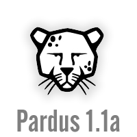

| Pardus 1.1 hazırlıkları tüm hızıyla devam ediyor!

Pardus 1.1 sürümünde masaüstü kullanıcılarını bekleyen önemli özellikler, 1.0 sürümünde kullanılan yazılımların en güncel sürümleriyle sınırlı değil. Servisler, kullanıcı yönetimi ve güvenlik duvarı yapılandırması için tasarlanan yeni kullanıcı arayüzlerinin yanı sıra, sistemde kurulan programların güncellendiği PiSi arayüzünde de önemli yenilikler bulunuyor.
5-10 Eylül tarihleri arasında Cebit Eurasia fuarında dağıtılan deneme sürümüyle gelişimi süren Pardus 1.1, kararlı sürümde masaüstünde 65 dil desteği ile sunulacak. Ayrıca, Hollandalı Pardus Gönüllülerinin desteğiyle başlayan süreçle birlikte CD'nin bilgisayara takıldığı andan itibaren bir çok dilde kurulum yapılabilmesi için çalışmalar sürüyor.
Kullanıcıların Pardus'la ilişkilerini güçlendiren siteler de 1.1 sürümüyle birlikte çok daha kolay ulaşılabilir hale gelecek. Masaüstü resimleri, Karamba temaları ve diğer görsel/işitsel yenilikler KDE sitelerinin yanı sıra, sanat.pardus'la tümleşik olarak çalışmaya başladı bile.
Gelişmeleri takip etmek için geliştirici günlüklerini ziyaret etmeyi unutmayın.
|